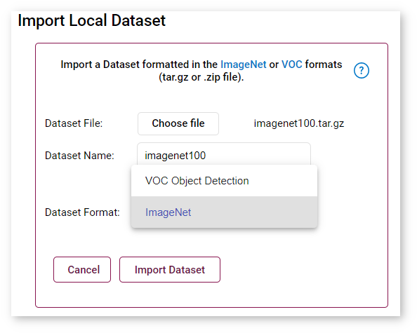

Download Server Logs
If you want to know more about an error, you can download server logs by clicking on the box with three dots next to the Version field and then pressing Download Log:
A .txt file with server logs will be downloaded. You can use logs to investigate the problems and manually run tools to debug the problem by entering the Docker* container. For more information, go to Enter Docker Container with DL Workbench.
Most Frequent Mistakes
- Incompatible model and dataset
- Range of inferences configuration
- Wrong archive
- Open Model Zoo models do not get imported
Incompatible Model and Dataset
This error appears due to model and dataset type confusion.
- Make sure you select the correct model task when importing a model in the Import Model step:

- Make sure you select the correct dataset format when importing a dataset in the Import Dataset step: 
- Check that you do not select a VOC Object-Detection dataset for a Classification model, or an ImageNet Classification dataset for an Object-Detection model.
Range of Inferences Configuration
When configuring numbers of streams and batches to run a range of inferences, make sure minimum values do not exceed maximum ones, as well as a number of steps is not greater than the difference between maximum and minimum values.
Wrong Archive
An error in the picture below can appear due to loading a wrong archive:
Please check the archive with a model or a dataset. This model must contain two files: .xml and .bin.
Open Model Zoo Models Do Not Get Imported
If you cannot import models from the Open Model Zoo, perhaps you have not specified your proxy settings. Make sure you specify them when running a Docker container. For details, refer to Install from Docker Hub*.